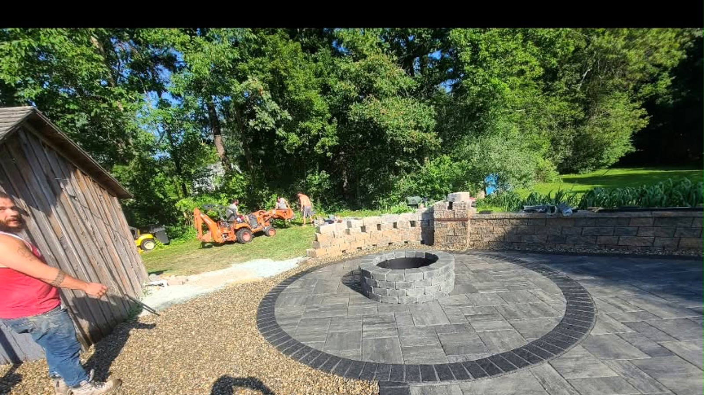
Mansfield, Massachusetts
Stone patios and walkways
built around Mansfield, MA.
Bryce's Patios is an owner-operated patio installer out of Mansfield, MA, building stone patios, walkways, retaining walls and fire pits across the towns near it. Bryce quotes the job and Bryce builds it.
01. The promise
Patios that still sit flat in ten years.
We come out and look at the yard with you before anything is priced. Where the ground slopes, where the water sits after a storm, where you want to be at seven in the evening. That decides the layout, not a catalogue.
Then we dig it out to depth, build the base up in lifts, compact each one, and lock the edges. It's the least interesting part of the job, and it's the reason the patio is still flat after ten winters.
-
i
Built to stay put
Full-depth excavation, stone base compacted in lifts, restrained edges. Once the pavers are down none of it is visible, which is why it gets skipped.
-
ii
Designed for your yard
Laid out around your grade, your doorways and the way you'll use the space. Two houses on the same street rarely get the same plan.
-
iii
One crew, start to finish
The person who prices the job is the person on site for it. No subcontractors, no crew you haven't met, one number to call.
02. Featured work
Patios, walls and fire pits around here.
Want to see a finished patio in person? Ask him for an address nearby.
These images are AI-generated renderings of the kind of work Bryce builds, not photographs of finished Bryce's Patios jobs. Real job photos replace them as they come in.
03. How the job runs
Most patios take about four days.
Same crew the whole way through. Here's roughly how a typical patio goes, day by day.
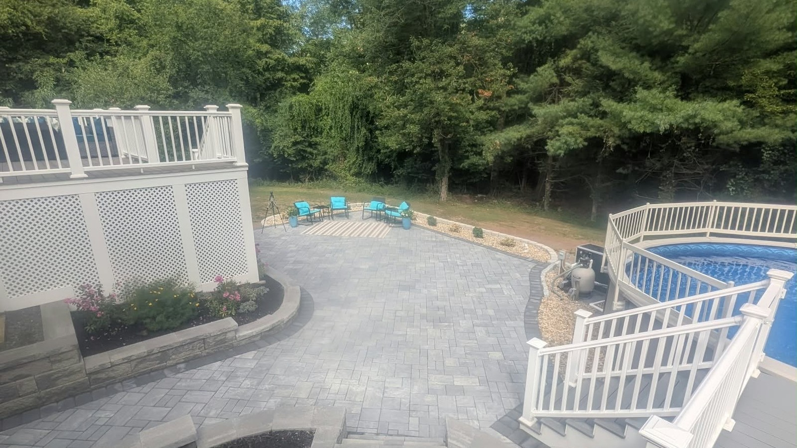
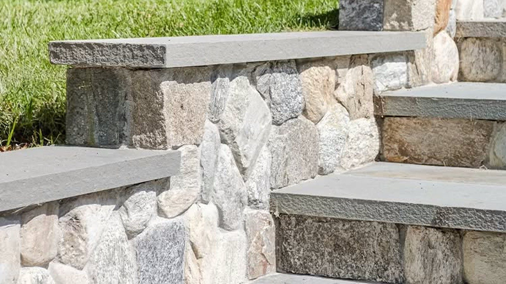
-
Day 1
Layout & excavation
String out the shape and set elevations, strip the sod, dig to full depth.
-
Day 2
Base & compaction
Crushed stone in lifts, compacted between each one, screeded flat.
-
Day 3
Setting the stone
Stone laid to pattern, cut to fit at every edge, joints swept in.
-
Day 4
Details & clean-up
Edge restraint, final cuts, and the site cleaned up before we leave.
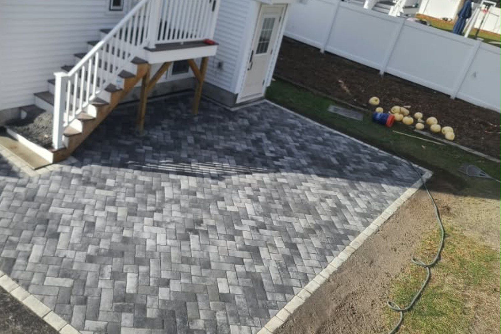
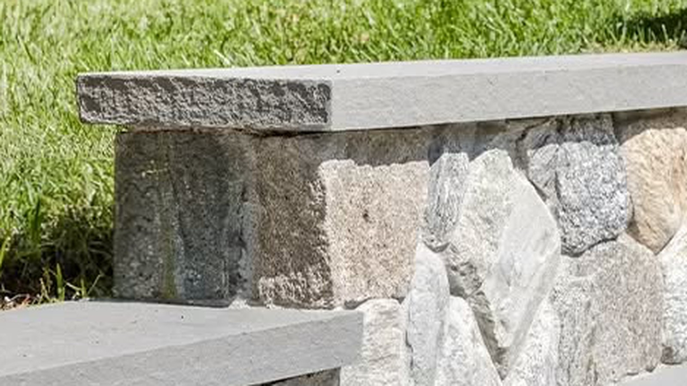
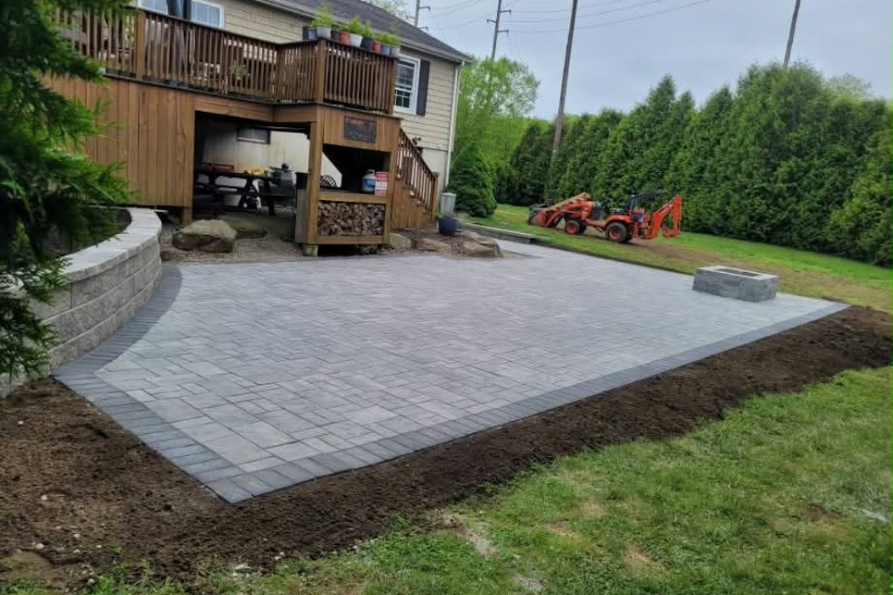
04. Craftsmanship
What the work actually looks like.
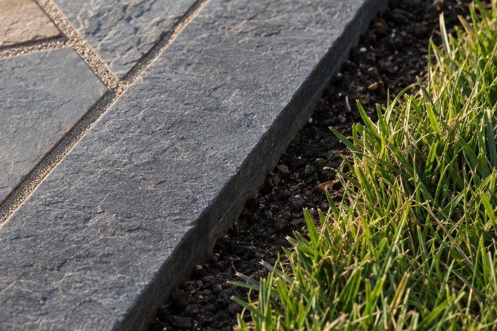
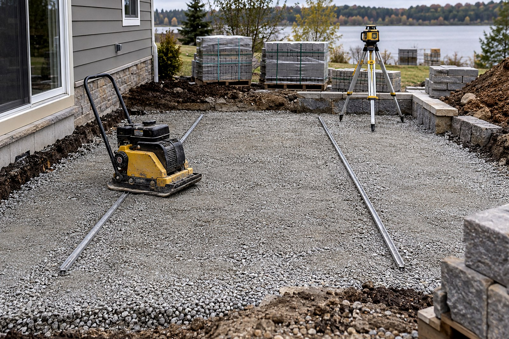
-
Cut, don't force
Anything meeting an edge, a step or a wall gets cut to fit, not nudged into place and covered over.
-
Drainage first
Slope, base and joints all get planned together so water leaves the patio instead of sitting on it.
-
Built for the freeze
Ground here freezes and thaws several times most winters, and it works anything shallow back up to the surface. Depth and compaction are the fix.
05. About Bryce's
Who you're hiring.
Bryce's Patios is an owner-operated hardscaping business. Bryce is on the tools every day. He quotes the work, runs the job, and finishes it. Most of the work comes from people who saw a patio he built down the street.
The crew stays small on purpose: one point of contact, one standard, and the same person answering the phone three years later. We're based in Mansfield and work well past it. If the job's right, distance won't stop us.
What you can expect
- A free on-site visit and a written estimate before anything starts
- A clear scope: what's included, what isn't, and what it costs
- One crew on site, start to finish
- A tidy site every evening and a clean one at the end
- A straight answer if we think you don't need the work
06. Straight answers
How patio work goes, start to finish.
Most people buy a patio once, so there's never been a reason to learn how one is built. Here's the whole thing in plain language: what we do, why it matters, and what to watch for when you're getting bids.
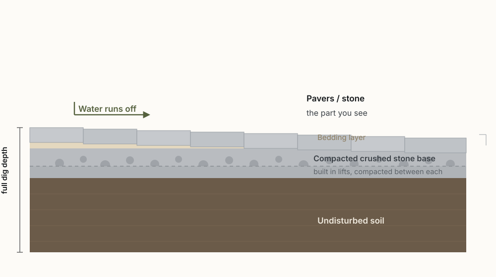
Nine-tenths of it is underground
The pavers you see are the last inch. Under them is the part that holds the job up: how deep they dug, the crushed stone base built in layers, and the compaction between each layer.
Pavers laid on dirt, or on a base dumped in one pass and never compacted, look the same on day one. It shows up the first hard winter, when the first paver moves and never settles back.
Ask anyone bidding: how deep are you digging, and how thick is the base? A real job has a number for both. A vague answer is an answer.
02. DrainageWater always finds the low spot
A patio should shed water like a roof does: away from the house, off the surface, and out. That comes from the slope built into it, not from sand added later.
It's the most common reason patios fail around here. Water sits, the base softens, and pavers sink unevenly. Pooling at a door is usually the same problem showing up five years in.
Easiest test: after a heavy rain, look where the puddles sit. If the same spot is wet days later, the grade is telling you something before anyone digs.
03. FrostWhy the freeze beats shallow work
Ground here freezes and thaws many times over a winter. Each cycle lifts the soil, and anything sitting too close to the surface comes up with it.
So depth isn't optional. A patio built deep and compacted right sits below the layer that heaves. A shallow one lifts apart from underneath, one paver at a time.
Watch for: a quote far cheaper than the rest. Sometimes that's a lower labor rate. More often it's less digging, which you'll never see.
04. MaterialsStone is a budget, not a style
Picking the look is the easy part. What moves the price is the material and how it's cut.
- Paver: uniform, cut to fit, fastest to lay. Good for clean lines and a tight budget.
- Bluestone: natural stone, cooler and more varied up close. Costs more per foot and takes longer.
- Flagstone: irregular shapes, the traditional look. Lots of cutting, so it lives in the higher range.
- Fieldstone walls: dry-stacked, no mortar. Slowest of all, and the one people stop to look at.
What a real estimate includes
A lump-sum price tells you nothing. The useful ones are itemized enough that you know what you're buying.
- Excavation and how much material leaves the site
- Base depth, in inches, not "to code"
- Which stone, and the actual pattern or size
- Edge restraint: the hidden piece that keeps the border from spreading
- Drainage plan for your grade, stated plainly
- Steps, seat walls and lighting broken out separately
- When they start, and who's on site doing it
The tell: a bidder who asks about your grade and how you'll use the space is planning a build. One who only asks how you want it to look is quoting a surface.
06. Your questionsAsk us anything
You don't need to know any of this to get a good patio. That's our job. But if you have a question about your own yard, the drainage around your house, or a number someone gave you, just ask.
We'd rather answer it up front than fix a patio you didn't want later.
Read the guide →07. Service area
Based in Mansfield.
Working well past it.
We're based in Mansfield and most of our work is in the towns around it, but there's no hard line on the map. If you're an hour or two out and the job is right, we'll come look at it. Tell us where you are and we'll give you a straight answer on whether it makes sense.
Not on the list? Tell us where you are and we'll tell you straight whether it makes sense. If we're not the right fit we'll say so.
- Frost depth
- Mansfield and the towns around it sit in a 30-inch frost zone. That number is why patios here fail and patios in the Carolinas don't. Every base we build is dug to depth and compacted in lifts, not skimmed.
- Massachusetts vs. Rhode Island
- Most patios under a certain size don't need a permit in either state, but the line is different on each side and some lots sit in a wetland buffer. We check which side your property falls on before we dig.
- The towns we're in most
- Mansfield, Attleboro, Norton, Foxborough and Taunton for Massachusetts; Pawtucket, Cumberland and East Providence for Rhode Island. Closer to Mansfield, the faster we can get out to look at a yard.
Massachusetts
Rhode Island
- Pawtucket
- Cumberland
- Lincoln
- Central Falls
- Providence
- East Providence
- Woonsocket
- Barrington
- Smithfield
- North Smithfield
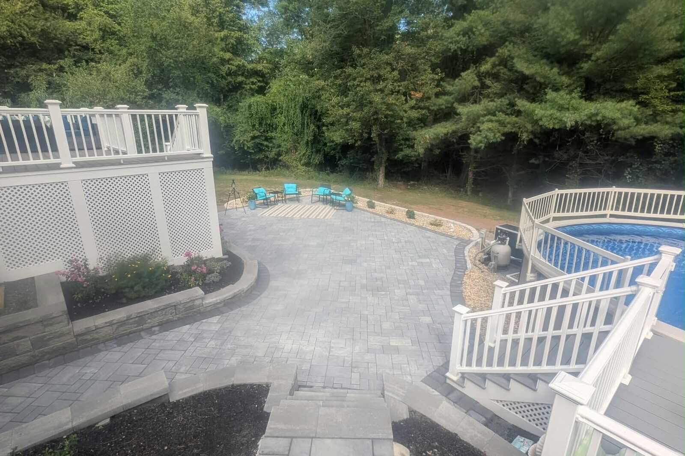
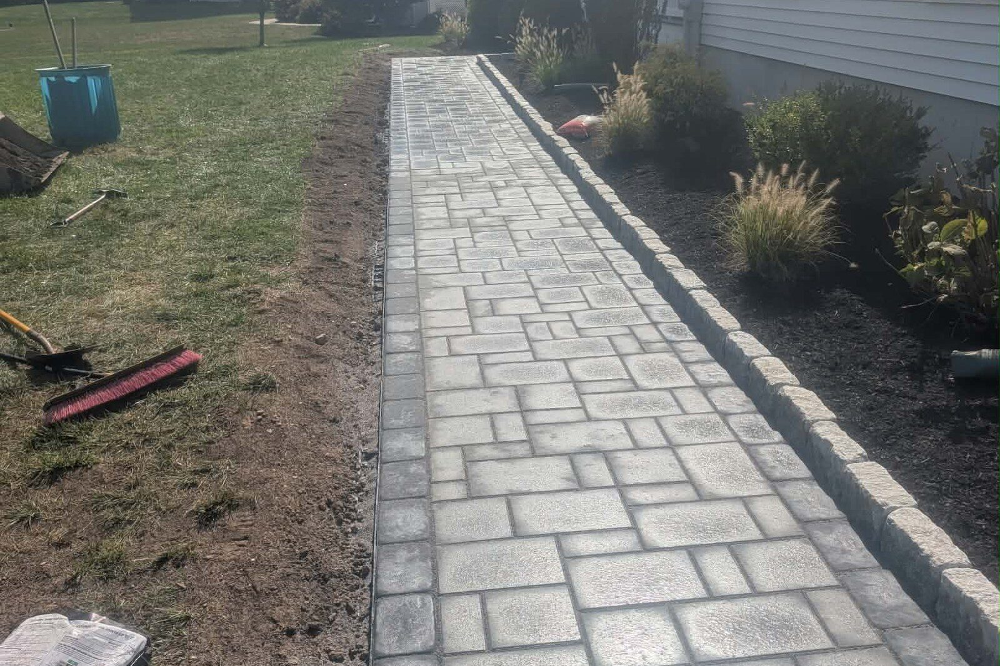
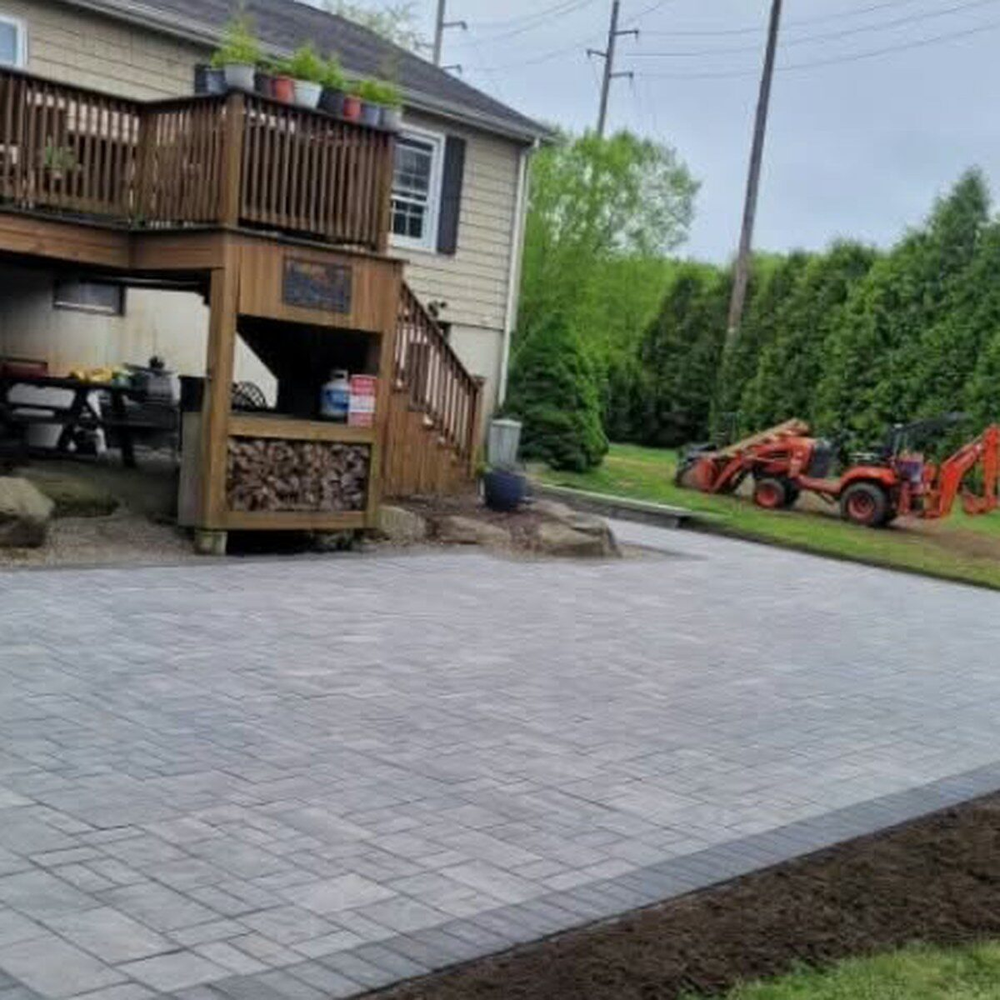
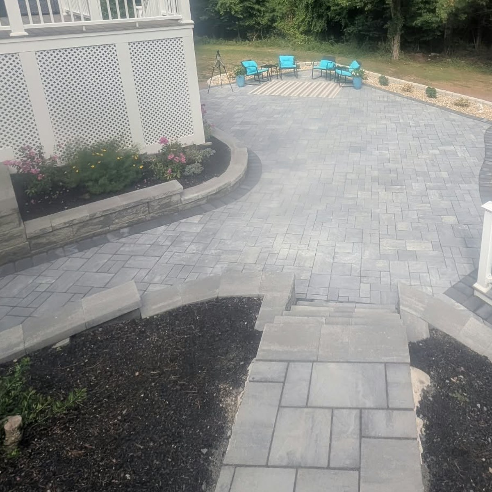
Common questions
The questions people ask before they hire.
How deep should a patio base be in Massachusetts?
In this part of Massachusetts the ground freezes and thaws repeatedly through the winter, so a patio has to sit below the depth that heaves. That means full-depth excavation and a crushed stone base built up in compacted lifts rather than a shallow layer of stone. The pavers are only the top inch. The base underneath is what keeps the patio flat after several winters.
Why does my patio have puddles and settle?
Water that sits on a patio is almost always a grading problem. A patio should be sloped to shed water away from the house, and the base and joints should be planned to drain together. When water sits, the base below softens and pavers sink unevenly. It is the single most common reason a patio fails.
What should a patio estimate include?
A useful estimate is itemized: how much is excavated and hauled away, the base depth in inches, which stone and pattern, edge restraint, a stated drainage plan for the grade, and any steps, seat walls and lighting broken out separately. A single lump-sum number tells you very little about what you are buying.
Paver, bluestone or flagstone, which costs more?
Paver is uniform and cut to fit, so it is the fastest to lay and the most budget-friendly. Bluestone is natural stone with more variation, costs more per square foot and takes longer. Flagstone is irregular and requires a lot of cutting, so it sits higher again. Dry-stacked fieldstone walls are the slowest and most expensive of all.
08. Free estimate
Tell us about your project.
Three quick steps, about a minute. Then we come out, look at the space, and give you a written price.